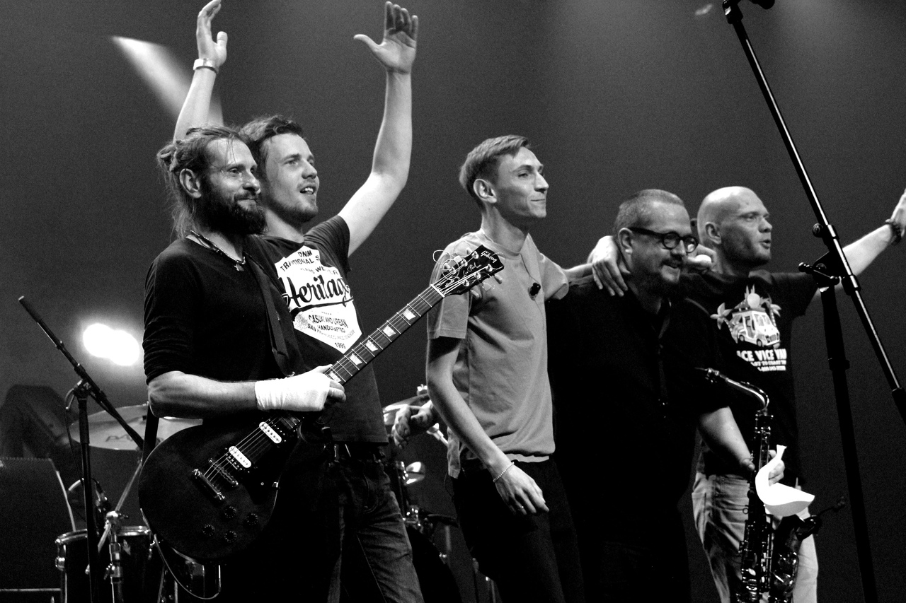
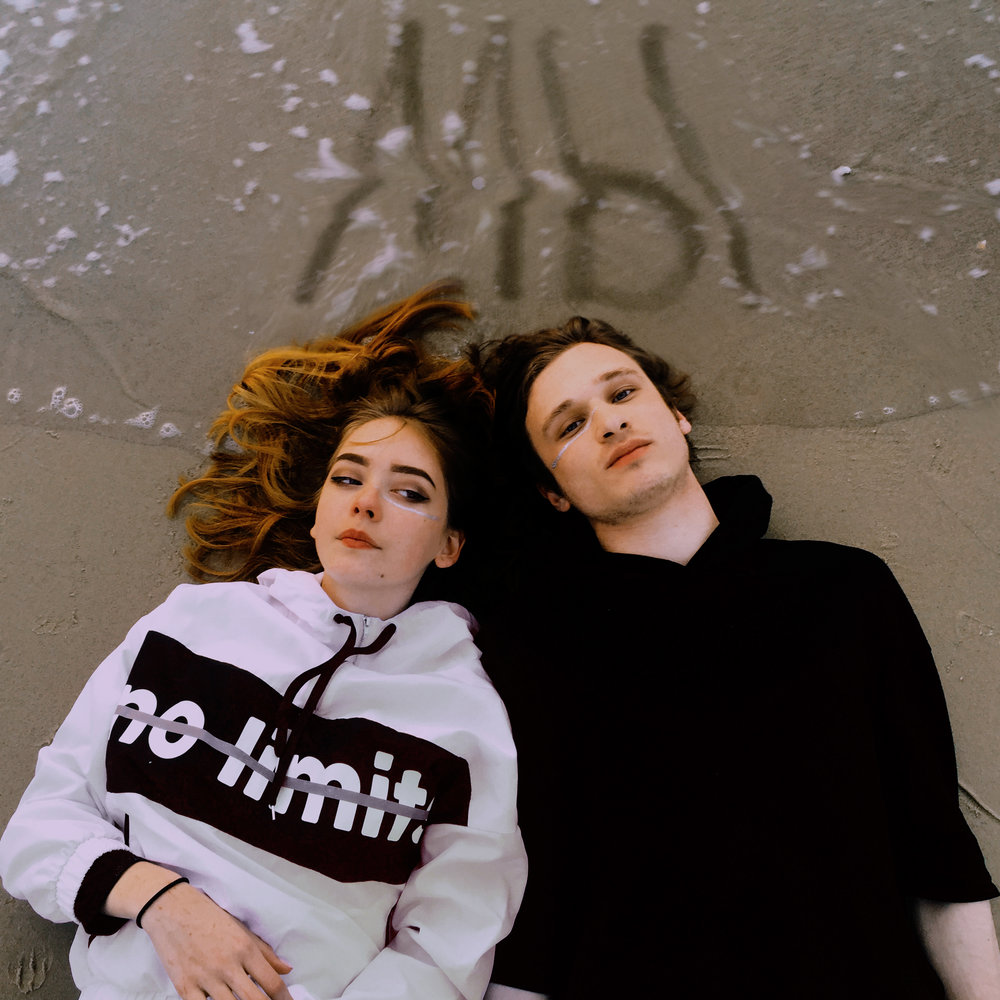
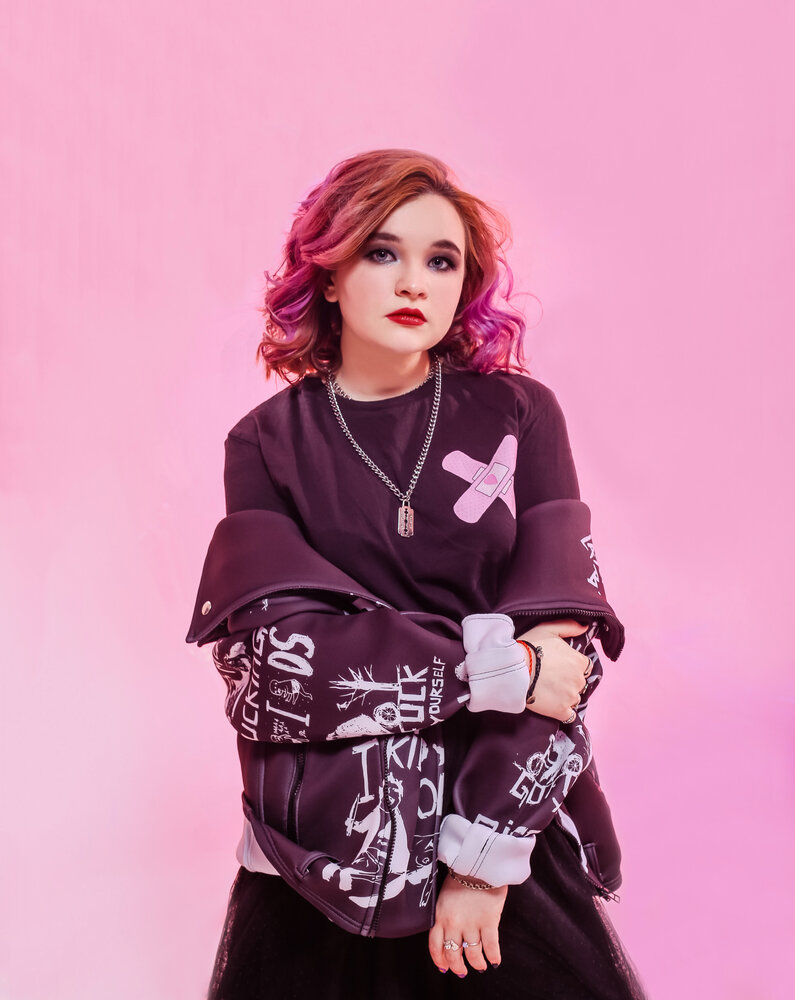

дайте танк! «Дайте танк (!)» — российская рок-группа из подмосковного города Коломна. Была основана Дмитрием Мозжухиным (гитара, баян, вокал) и Александром Романкиным (гитара, клавиши, труба) в 2007 году. На сегодняшний день коллектив состоит из пяти музыкантов. Группа периодически выпускает новые песни и ежегодно даёт сольные концерты в Москве, Санкт-Петербурге и других городах России, а также выступает на музыкальных фестивалях (таких как «Боль», «Motherland», «Пикник „Афиши“», «Дикая мята» и др).
мы «Мы» — дуэт бывшего участника группы OQJAV Даниила Шейка и певицы из Тель-Авива Евы Краузе, образовавшийся в 2016 году. Группа стала широко известной благодаря песне «Возможно», клип на которую собрал более 10 млн просмотров. С ноября 2018 года Ева перестала появляться в треках «Мы», начав сольную карьеру. Позже она сообщила, что больше не планирует работать с Даниилом.
алёна щвец Свой музыкальный стиль Швец позиционирует как пост-бард. По словам Алёны Швец, писать стихи она начала с детства. Лирика исполнительницы, как правило, строится на проблематике человеческих взаимоотношений, романтических переживаниях, нередко является сатирой на разные аспекты социальной жизни. В альбоме «Проволока из одуванчиков» чётко прослеживается тематика однополой любви.
 вам может быть интересно